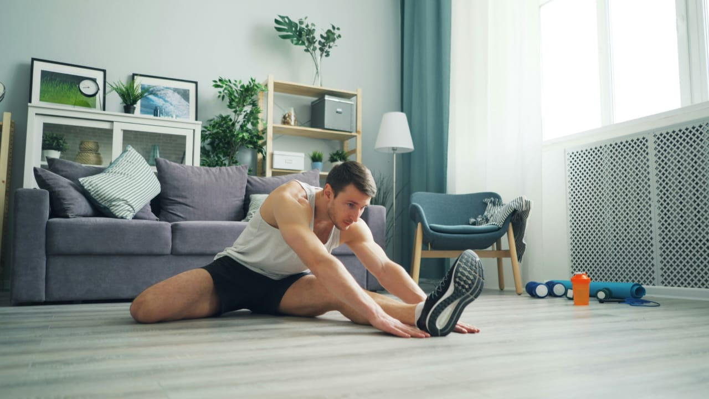
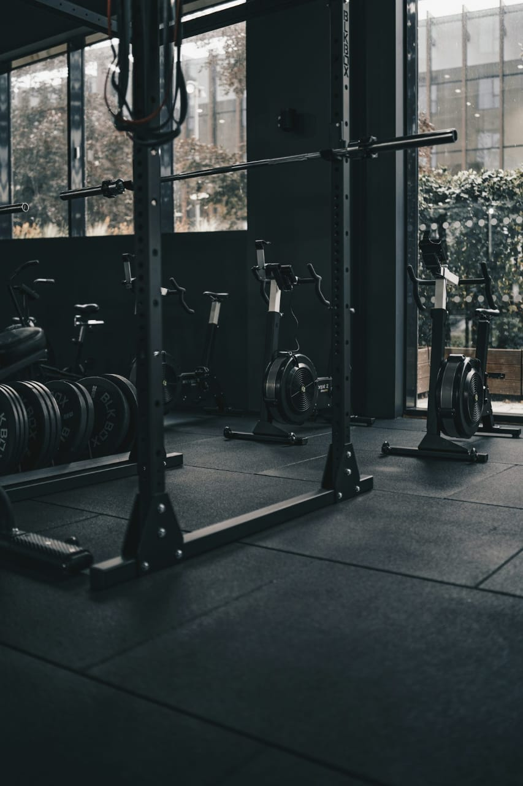
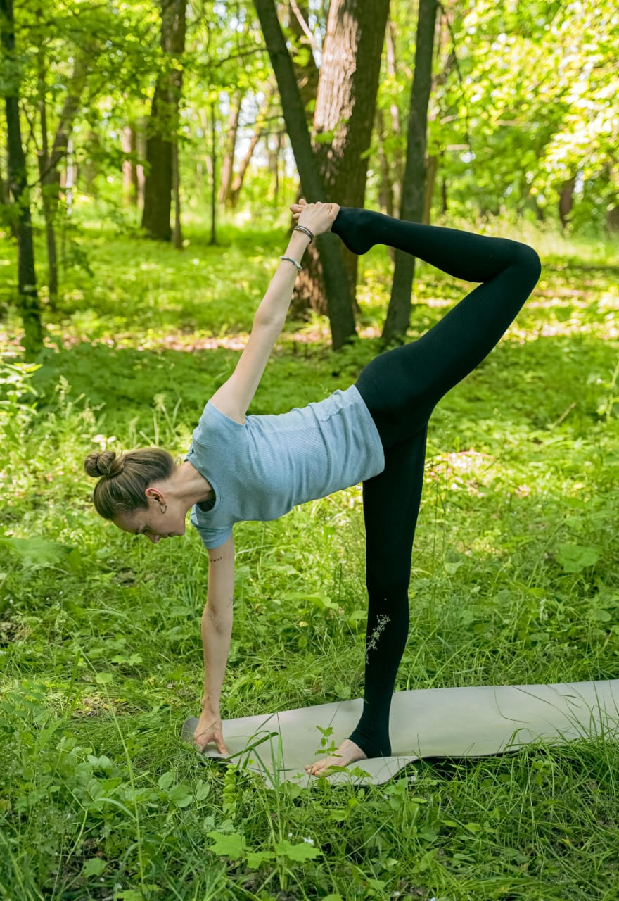

مثل الجري، السباحة، ونط الحبل. هي الأفضل لحرق السعرات وتحسين صحة القلب.

استخدام الأوزان أو وزن الجسم لشد الترهلات وبناء كتلة عضلية تزيد من معدل الحرق.

مثل اليوجا والإطالات، ضرورية جداً لمنع الإصابات وراحة العضلات بعد التمرين.
• إذا كان هدفك التخسيس: ركزي بنسبة 70% كارديو و 30% مقاومة.
• إذا كان هدفك نحت الجسم: ركزي بنسبة 60% مقاومة و 40% كارديو.